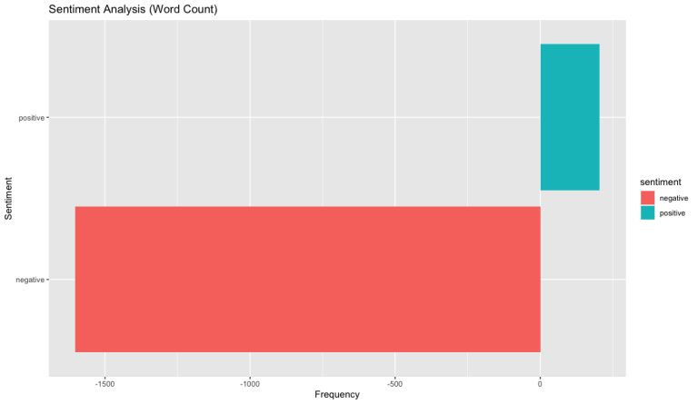

Introduction
Following on from my last post outlining LDA, I’ll go further to analyse the sentiment of the tweet text. The most straightforward way to approach sentiment analysis is to use one of the many sentiment dictionaries available.
I’m going to use the Loughran McDonald dictionary which has several sentiments defined. I’m choosing it simply out of familiarity and there are plenty of others to choose from. In this post I’ll subset only the positive and negative sentiments.
Here’s refresher of the data I’ll be using. Remember this is 2000 tweets tagged ‘#parliament’ that I extracted from Twitter. The data is… messy.
> print(twtr[1:10, "text"])
# A tibble: 10 × 1
text
<chr>
1 "Parliament records accessed by @Iyervval prove your grandfather voted FOR the Emer…
2 "Shocking \nShameful \nDisgraceful \n\nPapers thrown at Speaker from Congress camp …
3 "To save one man, Modi ji is trampling the interests of 140 Cr people.\n\nTo protec…
4 "@QuetzalPhoenix \"vote\"? What are the odds parliament & the Scottish execu…
5 "RCN student members are at the Welsh Parliament today, looking forward to talking …
6 "She’s gradually being pushed out of parliament by her own people.Won’t be long &am…
7 "#AndrewBrigden for #PM in an English parliament #VoidTheUnion https://t.co/SNiAqQ6…
8 "Dummy parliament dummy speaker dummy pm. We not want any resolution against suprem…
9 "@Rendel_Harris @MikeyCycling @markandcharlie @AndyCoxDCS I think you need to ready…
10 "Attended Prize Distribution Ceremony of #MPs #CarRally on #RoadSafety organised by…First off I’ll declare the textdata library, define the sentiments I’m interested in and create a function with the sole purpose of standardising my chosen sentiments in the extracted data. In short, negative sentiments will need to be displayed as less than zero on my plot.
library(textdata)
required_sentiments <- c("positive","negative")
overall <- function(in_data){
mutated <- mutate(in_data,
overall = (positive - negative),
negative = (-1 * negative)
)
pivot_longer(mutated,
cols = required_sentiments,
names_to = "sentiment",
values_to = "n"
)
}1. The Loughran McDonald dictionary
You can find documentation for the Loughran McDonald dictionary here.
Next it’s time to create the tokens, remove stop words and merge the sentiments from our dictionary with inner_join. Sentiment analysis depends wholly on categorising words with sentiment values.
In this step I also filter on my chosen sentiments and summarise the frequencies of each before transposing.
twtr_text <- as.data.frame(twtr) %>%
unnest_tokens(word, text) %>%
anti_join(stop_words) %>%
arrange(word) %>%
inner_join(get_sentiments("loughran"), multiple = "all") %>%
filter(sentiment %in% required_sentiments) %>%
count(word, sentiment) %>%
group_by(sentiment) %>%
summarise(sentiment2 = sum(n)) %>%
spread(sentiment, sentiment2) %>%
overall() The result of merging the dictionary is below. Each token/word has been assigned a sentiment value for each row it appears in. Better yet, only rows that have matching words in the dictionary remain so we’ve fewer rows of data to handle.
> print(twtr_text[1:10, c("id_str","word","sentiment")])
id_str word sentiment
1 1640175617973841920 abide constraining
2 1640191141839511553 abiding constraining
3 1640676248849375232 abolish negative
4 1640218957368946690 abolish negative
5 1640209920950927360 abolish negative
6 1640176958930599938 abolish negative
7 1640207450778517504 abrupt negative
8 1640231567590309889 absence negative
9 1640219874650906625 absence negative
10 1640209883617263616 absence negative2. Plotting the sentiment values
After the frequency count and filtering the data looks much better. I have the sentiments I’m interested in and a frequency count of each so that this data is ready to be plotted.
> print(twtr_text)
# A tibble: 2 × 3
overall sentiment n
<int> <chr> <dbl>
1 -1398 positive 205
2 -1398 negative -1603And that’s next…
ggplot(twtr_text,
aes(x = sentiment, y = n, fill = sentiment)) +
geom_col(show.legend = TRUE) +
# facet_wrap(~ sentiment, scales = "free") +
coord_flip() +
labs(
title = "Sentiment Analysis (Word Count)",
x = "Sentiment",
y = "Frequency"
)
Oh dear. Parliaments of the world, Twitter users say you need to step up.
3. Conclusion
Sentiment analysis of Twitter data using R is so simple and yet so few brands use this as a technique for measuring their customer’s attitude. Perhaps brands don’t care or don’t have a big enough Twitter following to think this is worthwhile. However, it is a useful tool to help with growing Twitter influence and seeing the results can inspire change in attitude. For these two points alone it is one tool I always recommend clients use on a regular basis where appropriate.
If you’ve been affected by any of the topics mentioned in this article and would like a detailed sentiment analysis of your brand:- contact me.